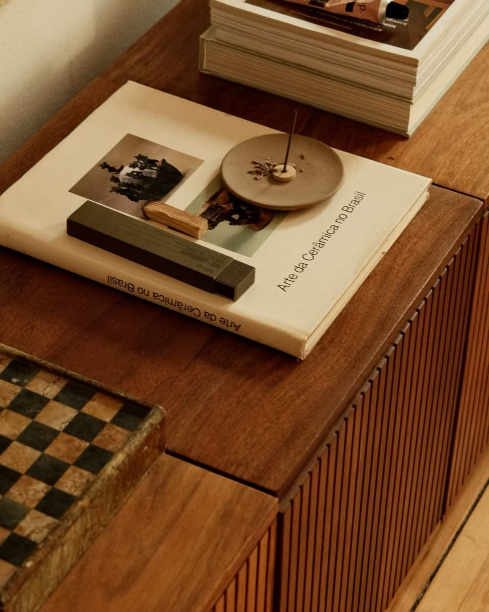

DESIGN & DATA
Exploring Design Through Data.
Data offers another perspective on the world of design. This interactive visualization explores patterns and insights through the power of visual storytelling.

HOUSE OF RÝMI · CREATIVE PRACTICE
An exploration of interior design, spatial storytelling, and the relationship between people and place.
EXPLORE THE PROCESSA THOUGHTFUL APPROACH TO DESIGN
I believe meaningful interiors begin with understanding. Before selecting materials, furnishings, or colors, it is important to consider the people, history, and purpose behind a space.
My approach to interior design balances creativity with functionality, exploring how thoughtful spatial decisions can influence atmosphere, movement, and human connection.
Every project begins with observation. I explore the architecture, surroundings, history, and intended function of a space while considering the people who will experience it.
Ideas begin to take shape through visual research, color palettes, material selections, and inspiration. I look for opportunities to create a cohesive narrative through texture, composition, and detail.
The final stage brings the concept into reality. Spatial planning, thoughtful furnishings, and practical considerations work together to create environments that feel intentional and welcoming.
INSPIRATION & MATERIALITY

Inspiration can be found in architecture, nature, history, materiality, and the everyday experiences that shape how we interact with our surroundings.
FROM IDEATION TO EXECUTION
Every successful interior begins with a thoughtful process. These are the key stages I consider when approaching a new design project.
Understanding the space, its history, its purpose, and the people who will experience it.
Establishing the visual direction and narrative behind the proposed interior.
Translating the design concept into a functional and thoughtfully considered environment.
CREATIVE INFLUENCES
I find inspiration in designers who approach interiors with curiosity, confidence, and a willingness to experiment. Kelly Wearstler's work demonstrates how materials, unexpected combinations, and creative exploration can transform an interior.
Creative inspiration: A Day in the Studio with Kelly Wearstler.
DESIGN & DATA
Data offers another perspective on the world of design. This interactive visualization explores patterns and insights through the power of visual storytelling.